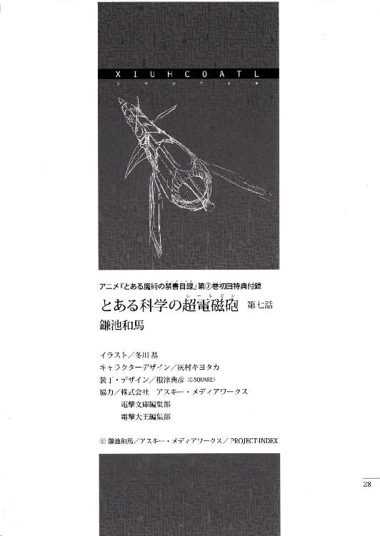
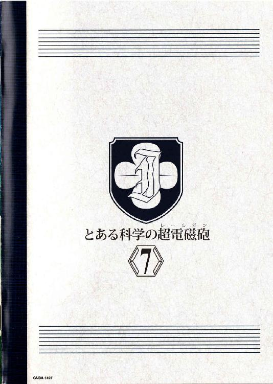

| [鎌池和馬] とある科学の超電磁砲7 | |
| 鎌池和馬 | |
| (2015) | |
|
アニメ『とある魔術の禁書目録』
第⑦巻初回特典付録
|
とある科学の超電磁砲
第七話
空は青かった。
そこに渦巻く人々の想いなど無視して、天候はひたすらに晴れ。今が九月である事を忘れさせるほどの、白く輝く光が早朝から頭上へ降り注ぐ。
アメリカとメキシコの国境線沿い。
太平洋の海岸近くに、中米に本拠地を置くとある組織『翼ある者の帰還』の前線基地は存在した。
現代風に言えば、いわゆる空母のようなものだろう。旧式の大型タンカーを一隻買い取り、その内部に大量の『雲海の蛇』を搭載したもの。軽く二〇〇メートルを超す平べったい甲板の上には偽装のための鉄鉱石が山のように積み上げられているが、『翼ある者の帰還』ならば誰もが知っている。この鉄鉱石の下に、彼らの最終兵器が寝かされている事を。
「『太陽の蛇』か......」
甲板の端に立っているのは、ショチトル。彼女はその褐色の肌を陽射しにさらしながら、自分の身長の何倍も高い鉄鉱石の山を見上げる。
彼女の隣には、もう一人、別の少女が佇んでいた。
ショチトルの同僚、トチトリだ。
「ようやく下準備が終わって、本格的に発動できる状態になったらしい。これで、あの忌々しい研究施設を木っ端微塵にできる。まったく、最初からこいつを使えれば簡単に終わったのにな」
「鍵となる霊装を学芸都市の連中に奪われた訳だ。......まぁ、あれの仕組みを解析できたとは思えないが」
そっけない調子で言うショチトルは、どこか上の空だ。
トチトリはそんな彼女の横顔を見て、笑う。
「気になるのか？」
「何が」
「あの子だよ」
「......、」
「こんなものを持ち出したら、細かい狙いなんてつけられない。学芸都市は海の藻屑となるだろう」
「だからどうした」
ショチトルは吐き捨てるように言った。
迷いを振り切るように。
「正しい選択をするためのヒントは全て与えている」
ガゴォン、という重たい鉄板が動くような音が聞こえた。
複数のアラームが鳴る。
「───霊装による駆動起点を確認！ 動き出すぞ、巻き込まれるなよ!!」
甲板で作業していた『翼ある者の帰還』の連中が、一斉に鉄鉱石の山から遠ざかった。ショチトル達の見ている前で、黒々とした山が崩れていく。ザラザラという耳障りな音と共に、その内側から威容が顔を覗かせる。
全長一〇〇メートル以上の巨大兵器。
『翼ある者の帰還』の切り札。
太陽の蛇。
鉄鉱石の山の上をのたうち回る大蛇のように、遠隔操作で斜めにせり上がり、海面を睨みつける四機の切り札を見て、ショチトルは目を細める。
学芸都市の第三短距離滑走路で、フレーヴとオーバーは作業を行っていた。
「......結局、使い物になるのはいくつ残ったんだ？」
「第三、第五、第七、第八の四本。......あの電撃まとったお姫様、取り引きをしたいってのは本当だったみたいだな。本当に使う滑走路だけは残しておいてくれやがった」
「おいおい。格納庫の方なんかカミナリみたいなのでバカスカ吹っ飛ばされてただろ」
「そっちも、整備用の建物ばかりだった。実際に戦闘機を詰め込んでいた建物には傷一つない。思いやりすら感じるね。......本当に敵なのかどうか、そこから怪しく思えてくる」
「気が強い女が好きなのか？」
「子供は全般的に嫌いだよ」
パイロット二人が適当に話を続けていると、牽引用のトラクターに引きずられるように、格納庫の方から戦闘機が出てきた。ラヴィーゼ飛行隊の機体はF-35をべースに手を加えたものだが、数々の装備品を追加したおかげで垂直離着陸機能はほぼ確実に使えない状態になっていた。七〇〇メートル程度の、短距離滑走路を使って離陸するのが基本である。
特殊な形状のステルス機に目をやりながら、フレーヴは言う。
「......あのお姫様の要求、知ってるか？」
「無関係な観光客と従業員を、全員、大型救命艇サーモンレッドに乗せろって言うヤツだろ。大仰な願い事じゃないか。できる事なら俺達にも乗ってもらいたいらしい」
「できると思うかよ？ 『雲海の蛇』ってのは、最大でマッハ二を超えるんだぜ。のろまな大型船を海に浮かべてみろ。どうなるかは目に見えているだろ」
「さてな。確かにこの状況で、大型救命艇を守り抜くのは難しいかもしれないが」
オーバーは首元にかかるドッグタグを指先で弄びながら、
「だが、自分のプライドを試すチャンスでもある」
「お前、やっぱり気が強い女が好きだろう？」
その時、傍らのパイプ椅子に置かれていた無線機から、ザザッというノイズが響いた。
オペレーターの声が二人の耳に響く。
『学芸都市東側の洋上二〇キロ地点に機影を確認!!「雲海の蛇」です!!』
「......仕事だな」
「それも、ちょうど学芸都市とアメリカ本土を塞ぐ形で現れやがった」
フレーヴとオーバーの二人は小さく笑いながら、航空機用のヘルメットを手に取った。
先日の被害によって、戦力の差は大きく開いた。手持ちの武装だけでは、形勢は明らかに不利。それでも彼らは、弾薬とミサイルを満載に積んで滑走路の一角に並べられた戦闘機へと走っていく。
「世界の警察か」
「もはやお馴染みの言葉だが、悪くはない」
『皆さん、急いでください』
学芸都市に、英語のアナウンスが流れていた。
音源はテレビだ。
街中にある、大小無数のありとあらゆるテレビから、女性の声が聞こえてくる。
『この学芸都市の基盤構造に、重大な欠陥が発見されました。高低差七メートル以上の高波を長時間受け続ける事によって、人工の砂浜が一気に海側へ押し流される危険性が指摘されています。場合によっては、それに連動する形で人工島全体が崩壊するかもしれません』
映像はない。
最低限の通信機能しか保持していないのか、画面は真っ黒。テレビのスピーカーだけを利用して、丁寧な口調のアナウンスは統く。
『数時間前、学芸都市の南西四〇キロ地点に、熱帯低気圧が発生しました。状況によってはサイクロンに発達する恐れもあります』
ホテルの客室にいる者が、浜辺で遊んでいる者が、ショッピングモールで買い物している者が、ビルの壁面に貼り付けられた大画面から携帯電話の小さなモニタまで、様々な媒体を利用してそのアナウンスを聞いていた。
『このサイクロンの影響によって学芸都市の基盤にダメージが加わる可能性はありますが、それによって必ずしも転覆するという訳ではありません。学芸都市を離れる事も強制ではありません。ただし、救命艇は二時間後に出港します。本土へ帰る判断をされた方は、できるだけ急いで行動してください。各地に停泊している大型救命艇サーモンレッドの位置情報は───』
金髪爆乳の天才少女・ビバリー＝シースルーは一通り原稿を読み上げると、マイクのスイッチを切ってこう言った。
「これで良かったの？」
「ええ、すみません。木来はこういう事に巻き込むべきではないのは分かっているんですけど、私や佐天さんは英語ができないので......」
ぺこりと頭を下げたのは初春だ。
彼女達がいるのは、浜辺にある『係員』の管理事務所だ。普段はライフセーバーのように遊泳客の安全を確認するための施設のようだが、今は誰もいない。『戦い』のためにほとんどの人員を動員しているらしい。
初春はここにあるコンピュータを使って学芸都市のローカルなケーブル放送に侵入し、テレビの送信機能を利用して海賊放送を流した訳だ。
ここにいるもう一人の少女、佐天涙子は事務所の窓の方に目をやって、
「でも、これでちゃんとみんなが救命艇に向かってくれれば良いんだけど......」
「いくら情報を流しても、真剣に聞いてもらわなければ意味がないですからね」
初春も心配そうな声で同意したが、対してビバリーはでかい胸を張ってこう言った。
「その点については大丈夫ね」
「？」
「そこの野暮ったい花柄ワンピース水着の少女よ。君は英語ができないから分からなかった？私はもらった原稿通りには読んでいないのよ。自分なりにアレンジして、アドリブを混ぜてアナウンスしていたの」
「そ、そうだったんですか？」
意図が分からずに首を傾げる初春に、ビバリーは『うむ』と頷いて、
「ここで重要なのは、私が映画監督だという事。お客さんを招き寄せ、繋ぎ止め、心に残る作品を生み出すための技術だけを追求しているエキスパートよ」
つまりね、とビバリーは一度言葉を切って、
「この私が考えた言葉で、心を動かさないお客さんなんていないのよ」
ドォ!! という轟音が窓ガラスを震わせた。
初春と佐天がギョッとして目をやると、今まで浜辺にいた男や女が、大人や子供が、一斉に一方向ヘ走り出した所だった。彼らの表情に余裕はない。相当焦っているのか、全員が全力疾走だった。
「ポイントは、強制をしなかった事ね。最終的な判断を客自身に委ねてしまう事で、『どうせ誰かが何とかしてくれるだろう』という楽観的な余裕を奪うの。そして、『助かる者』と『助からない者』を暗喩する事で、『勝ち組のグループに入りたい』という意識に働きかけられればパーフェクトね。アメリカでは特に有効な方法よ」
浜辺にいた『係員』が何かを叫んでいた。
彼らは大型救命艇サーモンレッドや、その停泊ドックを一般には公開していない。そんな所に大勢の観光客を連れ込む訳にはいかないから、おそらく客を押し留めようとしているのだろう。しかしその努力は無駄だ。あそこまで大勢の人間が一方向に向けて駆け出したら、もう暴徒の群れを抑える術はない。
佐天は口をパクパクと開閉させながら、
「うわ、うわ、うわ、うわ、うわーっ!! なんか大変な事になってるんだけど!?」
「それじゃあ、もう一押しよ。───きゃああーっ!!なんかアスファルトにヒビが入っているぅーっ!!」
「ビバリーさんやり過ぎですってば!! その叫び声に触発されて『係員』の人が呑み込まれちゃったじゃないですか!?」
暴徒鎮圧のために銃弾が使われないかが心配な初春だったが、形勢不利な状況で、さらに美琴が派手に暴れ回った後だ。ただでさえ貴重な戦力をこんなつまらない事で消費するとは思えない......というのが、この『アナウンス作戦』を立案した美琴の意見だった。
一人二人の侵入者ならともかく、万単位の人間が押し寄せた場合は話は別。
大型救命艇サーモンレッド自体は機密エリアであるものの、学芸都市が躍起になって研究している『日本の学園都市とは違う方式の超能力開発』とはあまり関係がない。救命艇について『妥協』してしまえば暴徒と戦う必要はないはずだから、向こうも徹底抗戦する事はないだろう、と。
とりあえず、映画監督スキルを発揮しまくったビバリーのおかげで、学芸都市全域の観光客の心を動かす事には成功したようだ。だとすれば、初春達もここに残っている理由はない。
「じゃあ、佐天さん、ビバリーさんも。私達も最寄の大型救命艇へ向かいましょう」
そだね、という佐天の返事は聞こえなかった。
ギィイイイイイイ!! という凄まじい戦闘機のエンジン音が炸裂したからだ。
鼓膜がビリビリと震えた。佐天が思わず両手で耳を押さえてうずくまり、ビバリーは涙目で窓の方ヘ目をやった。初春もそちらを見る。学芸都市にある滑走路から飛び立って、そのまま低空飛行で移動しているのか、複数の戦闘機がひっきりなしに青空を突っ切っていく。
初春はうずくまった佐天に手を貸しながら、ビバリーに言う。
「早く救命艇へ!! いつ戦火が学芸都市まで伸びてくるかは分かりません!!」
「......そもそも、あれがアトラクションじゃないのは分かったとはいえ、何がどこへどう襲ってくるのか、具体的に何の説明も受けていないのよね」
ビバリーは協力の見返りを求めているようだが、今ここで一から説明している暇はない。そもそも、佐天の言う通り『日本の学園都市とは違う方式の超能力開発』が行われていた場合、それは一般人であるビバリーに説明できるレベルの話なのかという疑問もある。
とにかく、考えるのは安全を確保してから、という事で、初春は佐天の手を引いてビバリーと一緒に『係員』の管理事務所から出て行く。
ふと、佐天がポツリと呟いた。
「ショチトル、来るのかな......」
御坂美琴はサンダルを履いた足を波打ち際につけたまま、遠くの水平線近くで巻き起こる爆発や水飛沫を見て、思わず歯噛みした。
「もう始まっちゃったの？」
現在、学芸都市の外周一二ヶ所に配置された大型救命艇サーモンレッドには、この街にいたほぼ全ての観光客や従業員達が乗り入れている最中だ。もう少しで出港できる状態だが、アメリカ本土に繋がる海路を塞がれてしまえば、どうしようもない。
サーモンレッドは大型船だが、それでも基本的には救命艇。ＧＰＳ自動航法で最短ルートを通るために最低限必要なものが積み込まれているだけで、戦場を避けるように大きく迂回したり、ハワイやグアム方向へ針路を取るといった回避策は取れない。
「あれをどうにか凌ぐまでは、身動きは取れませんわね」
傍らにいた白井黒子は、ひさしのように片手を目の上に当て、遠くへ目をやりながら、
「まぁ、街中に大勢の人が万遍なく溢れているよりは、戦いやすいとポジティブに考えましょう。ここに『雲海の蛇』が飛び込んできたとしても、被害は出ない訳ですし」
「そうね......」
美琴は白井の方へ向き直る。
いつもはエロ水着の白井黒子だったが、今はその上から、蛍光色のジャケットのような上着を着て、前もしっかり閉じている。おそらく『係員』の装備の一つなのだろう。素材を見る限り、ある程度の耐刃性能もありそうだ。
「どうせだったら、フル装備にした方が防御力が上がるんじゃない？」
「......この炎天下でそんな事したら、熱射病でぶっ倒れますわよ」
あっそう、と美琴は適当に返事しつつ、
「初春さんと佐天さんは？」
「もうサーモンレッドの方へ向かっていますわ。それより、わたくし達はいかがいたしましょう。『雲海の蛇』がここまでやってくる前に、今からでもできる事はありませんでしょうか」
白井は言うが、こればかりは仕方がない。
美琴の『超電磁砲』の射程距離は五〇メートル、白井の『空間移動』を使った攻撃も、八〇メートル前後が限界だ。水平線の辺りで繰り広げられる戦闘には手を出す事ができない。
と、その時だった。
「......伝える義務はありませんが、緊急です......」
背後から、そんな女性の声が飛んできた。美琴達が振り返ると、立っていたのは競泳水着に救命胴衣を着た、例の『係員』オリーブ＝ホリデイだった。度重なる戦闘で体のあちこちを痛めているのか、所々に包帯が巻かれているし、顔色も優れない。
オリーブはその手に小さな無線機を握ったまま、
「あなた達に協力を要請するのは癪ですが、事態が事態です」
「前置きは良いわ」
美琴は遮るように言った。
「なに？」
「こことは反対側、学芸都市西側の洋上三〇キロの地点に、新たな敵機が迫っています......。高度なステルス機能でもあったのか、潜水機能でも備えているのか、どうやら知らぬ問に回り込まれたようです......」
美琴はギョッとして、改めてオリーブの顔を見た。
「ちょ、ちょっと！ アンタ達の戦闘機はどうしたの!?」
「ラヴィーゼ飛行隊を使って迎撃も行っていますが、別方向から攻め込まれては......」
オリーブはそこで一度言葉を切ると、
「......地対空ミサイルのＰＡＣ３も先日の戦闘で『雲海の蛇』に破壊されましたし。残存する戦力では、現状の東側と対処するのが限界です。このままでは素通りして、西側に停泊しているサーモンレッドのいくつかが潰されてしまうでしょう」
その大型救命艇には、今も多くの観光客や従業員が乗り入れている最中だ。今すぐ出港する訳にもいかないし、かといって、船の内部にいる人達を即座に全員退避させるのも難しい。とにかく人の数が多すぎるのだ。そんな所へ攻撃が加わったら......。
そこから先は、考えるまでもなかった。
美琴は隣の相棒を目だけで見て、そして名前を呼んだ。
「黒子!!」
応じるように白井は美琴の手を掴み、『空間移動』で姿を消す。
彼女の『空間移動』の一回の移動距離は、八〇メートル前後が限界だ。ただしある一点まで移動したら次の一点へ続けて移動する、という方法を使えば、長距離でも素早く移動する事ができる。時速に換算すると、二〇〇キロオーバーといった所か。
「いつもこうやって能力に頼ってるから、自然と運動不足になってんじゃない？」
「ふぐぬ!?」
美琴の余計な一言で精神が不安定になるものの、どうにか能力の制御だけは保ち続ける白井。そんなこんなで、全体で直径一〇キロ前後の学芸都市の端から端まで、三分前後の時間で一気に横断していく。
西側の海岸は、今まで見てきた東側と違って、海面から何か柱のようなものがたくさん突き立っていた。等間隔で一面に並んでいるのは巨大なライトの群れだ。水平線の向こうまで等間隔に続く不可思議な光景を眺め、白井が言う。
「......これも意図的な景観作りってヤツでしょうか。確か、元々はＳＦ映画と同じ景色を作るための施設だったんですわよね」
そうかもしれないし、後から作られたものかもしれないが、今はそっちを気にしている暇はない。
美琴は砂浜に設置されたライフセーバー用の見張り台へ向かう。そこにあった双眼鏡を使って、肉眼では届かない距離へ目を向ける。
「何よ、あれ......？」
呆然と呟きながら、美琴が眺めているのは、水平線ではない。
大空だ。
地球は丸い。本来ならもう見えなくなっているはずの遠距離の向こうに、空気に霞むように巨体が佇んでいる。高度はどれぐらいだろうか。実際の速度はどれぐらいだろうか。あまりにも遠すぎて、区別がつかない。自分の頭上を流れていく大型旅客機が、具体的にどれぐらいの速さで飛んでいるのか、肉眼では判別しにくいのと同じだ。
ともあれ、今まで戦ってきた『雲海の蛇』とは比べ物にもならない。
おそらくは、あれが連中の本命。
あんなものを、学芸都市に上陸させる訳にはいかない。
美琴ははるか遠くを睨みつけながら、白井に尋ねた。
「黒子。海面に立ってる飾りの柱を使って、あっちの方まで移動できない？」
そして、美琴と白井の二人は洋上へ向かった。
足場が不安定であるため、白井は美琴の腰の辺りへ両手を回し、万に一つも移動と移動のタイミングで彼女を手放さないようにする。
移動を白井に任せたまま、後ろを振り返れば、黒煙が見えた。
はるか遠くにある学芸都市は、ここから見ると巨大なビルやジェットコースターのレールなど、大雑把に分かりやすいものだけが視界に入るだけだった。それより目立つのは、やはり煙。青空を汚すように、黒々とした煙があちこちから立ち昇っているのが分かる。
等間隔に並ぶ装飾用の柱は、洋上一五キロ前後の地点にある、学芸都市の敷地を区切る生物ガードという目の細かい網の辺りでブツリと途切れていた。しかしその先にも、おそらくは学芸都市の調査機材だろう......まるで機雷のようにプカプカと浮かぶブイの上を転々と移動していき、遠くへ遠くへ移動していく。
さらに七キロほど進むと、遠い点だった巨大兵器の全容が目の当たりになった。
全長一〇〇メートルオーバーの、細長い機体が空を飛んでいる。
基本的には『雲海の蛇』と同じ、木と布と黒曜石で作られた機体だ。ラグビーボールの端と端を掴んで無理矢理引き仲ばしたようなボディの側面や後方に大小の羽が取り付けられていたが、どう考えても航空力学の法則を無視している。まるで大空を泳ぐ巨大な魚のようだった。
しかも、一つだけではない。
美琴や白井の見上げる機体の後方から、三つ目、四つ目と同じものが飛んできている。
合計四機の巨大兵器。
「これが......佐天さんの言っていた......『太陽の蛇』？」
そうだとすれば、学芸都市へ近づけさせる訳にはいかない。どんな攻撃を行うかは分からないが、佐天がショチトルという少女から聞いた限りでは、とんでもない破壊力を秘めているらしいのだ。
「お姉様!!」
傍らの白井に大声で呼ばれ、美琴はようやく我に帰った。
呆けている場合ではない。
『太陽の蛇』は遠目で見るよりもずっと速く、気がつけば美琴達の頭上を通り過ぎてしまっていた。そうこうしている間にも、二機目や三機目が五〇メートルほど上空を飛び去ろうとしている。
ようやく最後尾の四磯目で、美琴は反応できた。
時速一〇〇キロ程度で大空を突き進む巨大な影を見て、美琴はサンダルのストラップに挟んでいたコインホルダーを引き抜く。そうしながら、移動役の白井へ言う。
「戻って！ とにかくあれを撃ち落とす！ アンタの足なら十分に追い着けるはずよ!!」
「ま、その言葉は信用されていると受け取りますわ」
白井が片目を瞑って応じたその時、二人の体が消えた。
再び海上に浮かぶブイを伝ってものすごい速度で転々と移動する美琴と白井。あっという間に最後尾の『太陽の蛇』に追い着いた美琴は、腰の辺りに白井をまとわりつかせたまま、親指を使ってコインホルダーから一枚のコインを弾き出す。
（高度は五〇メートル前後......射程ギリギリか!!）
歯噛みしながらも、美琴は親指を動かし、『超電磁砲』を発射。音速の三倍もの速度で空気を突き進むコインは摩擦によってオレンジ色に輝き、一直線に引き裂いていく。
ドゴン!! という轟音が遅れて炸裂した。
真下ではなく斜めから射出したためか、コインは『太陽の蛇』に激突する直前で、溶けて消えてしまった。それでも、溶け残ったカスのようなものがわずかに届いたのだろう。『太陽の蛇』の側面にあった、布や黒曜石で作られた羽の一本が、ボッ!!と強引に引き千切られる。
美琴は舌打ちして、
「黒子、ここからじゃまだ速い！ あいつの真下まで何とか移動して!!」
その時だった。
羽を潰された『太陽の蛇』の側面が、唐突に閃光を発した。紅蓮の輝きの正体は、炎。単純に『火』そのものというよりは、ドロリとした燃える液体を大量にばら撒いたような感じだ。
消防車の放水のように、鋭角的な射出ではない。
まるで巨大なハンマーで叩き潰すように、二〇メートル前後の不定形な赤い塊が、美琴達の頭上ヘ襲いかかる。
「!?」
反応したのは白井だった。
美琴の腰へ両手を回したまま、次々と海上に浮かぶブイの上を移動していく。巨大な炎のハンマーは海へ叩きつけられると、大量の水を蒸発させながらも、そこで消える事はない。そのまま海面を埋め尽くすように、炎の海が広がっていく。
「何よあれ！ 重油でもばら撒いてんのか!?」
しかし驚いている暇はない。
羽を一本潰された事で『太陽の蛇』も本腰を入れて美琴達を排除する気になったのか、機体の左右八ケ所から、同じように紅蓮の塊が噴き出された。青空が何重にも覆われ、炎が落ちるたびに海面が燃え広がっていき、美琴や白井の逃げ場を奪っていく。
このままでは埒が明かない。
苛立った美琴は叫んだ。
「上!!」
その意図を白井は掴む。
彼女の『空間移動』は、別に前後左右へ動くだけのものではない。まるで迫り来る炎の塊を素通りするように、白井は美琴を捕まえたまま、一気に大空へと移動する。
ちょうど、『太陽の蛇』の側面から突き出た、別の羽に着地するような格好で。
炎の噴出口が、グリン!!と美琴達の方へ向いた。
美琴にはそれが、人間が驚いて背後を振り返るようにも見えた。
しかし容赦はしない。
彼女の右手の親指には、すでにゲームセンターのコインが乗せられている。
ドゴン!! という爆音が炸裂した。
『太陽の蛇』は真っ二つにへし折られ、美琴と白井は次の標的を目指す。
初春飾利は、学芸都市東側のエリアにいた。
彼女はまだ大型救命艇サーモンレッドに乗り込んでいなかった。ドックの整備用コンピュータを使って、寸断されかかったネットワークに侵入し、防犯カメラを使って逃げ遅れた人がいないか調べていたのだ。
それは正義感や使命感といったものかもしれないし、あるいは美琴や白井だけに任せて自分だけが大型救命艇に乗り込む事に抵抗があっただけかもしれない。とにかく初春は、遠くから聞こえる爆発音や低い衝撃に指先を震わせながらも、こうして作業を続けている。
「初春！ そろそろあたし達も入ろうよ!!」
「もうちょっと......佐天さんは、先に乗っていてください！」
「初春!! だあーもう!!」
地団太を踏みながらも、なんだかんだで自分の事を待ってくれる佐天涙子は、木当に良い友達だと初春は思う。
（こっちは大丈夫。こっちも、こっちも......ホテルの中は。客室にはカメラがないから調べられないけど......大丈夫。従業員の確認済み報告はある。後は......）
そこから五分ぐらいかけて、めぼしい所は調べ終わった。やっぱり、逃げ遅れた人はいないようだった。所々で『係員』達が武器を持って残っているのが心苦しかったが、初春がここに残ってやれる事はもうなさそうだった。
「初春！ ほら、早く!!」
「わっ、分かりました」
佐天の言葉に促されるように、初春はコンピュータの側から離れようとした。
しかしその動きが止まる。
改めてコンピュータに顔を向ける。佐天が頭を掻き毟る音が聞こえたが、今はそれどころではない。
高速でキーを叩くが、目的の情報は得られない。確か、『あれ』は佐天の話によると、一番厳重な所にあったはずだ。となると、ネットワークから接続できる所には情報は保存されていないのかもしれない。
初春はコンピュータから離れると、今度は佐天の肩を掴んだ。
「佐天さん!!」
「なっ、何よ？」
「確か、『係員』の人はこう言っていたんですよね。施設の二重扉の向こうは、行方不明になった人達が入る場所だって!!」
「ちょ......」
佐天も、初春が危惧している事に思いついたようだった。
「あの人達が、まだあそこにいるって？ でも、『係員』の人達がきちんと誘導して、どっかのサーモンレッドに乗せてるんじゃ......」
「保障はありません」
「で、でも、そうだ。初春のコンピュータで調べる事は!?」
「機密扱いの情報なのか、ネットワークからじゃ分かりません。彼らに通信で連絡しても、そう簡単には答えてくれないでしょう」
初春は肩を掴んだまま、佐天の目を正面から見据える。
「佐天さん。大雑把で良いです。どこから施設に入って、どういう風に進んだのか。内部も含めて、地図を描いてください」
駄目だ、と佐天は思う。
ここで初春の指示に従ったら、初春は本当に学芸都市へ引き返してしまう。ただでさえ危ない状況でそんな事になったら、本当に無事では済まないかもしれない。
しかし、
「佐天さん!!」
正面から大声で名前を呼ばれた。
自分の友人の目を見て、迷い、それでももう一度彼女の目を見て、佐天は覚悟を決める。
「......付き合うわよ」
「え？」
「良いからっ!! さっさと確かめて、戻ってくるの!!今なら、ショチトル達はまだ学芸都市までやってきてない。このチャンスの内に、さっさとやる事やらなくちゃ!!」
「佐天さん......」
初春はわずかに黙り、それから頷き、佐天と二人で大型救命艇のドックから走り出す。
仮初の安全地帯を抜けて、彼女達も戦いを始める。
美琴と白井は海面のわずかな着地点を伝って、高速で海上を移動する。
標的は頭上の『太陽の蛇』。
先ほど一機は撃墜した。残りは三機。
全長一〇〇メートルを超すその巨体は、間近で見ると強烈な圧迫感を与えてきた。そして同時に、丸みを帯びた胴体が、巨大な虫の腹のような嫌悪感をも伝えてくる。
しかし、美琴にとって『太陽の蛇』は絶対に倒せない強敵、というほどではなかった。現在も白井の『空間移動』によって巨体の真下へと潜り込み、美琴は頭上に向けてゲームセンターのコインを音速の三倍で射出している。美琴達を押し潰そうと、大量の炎の塊が撒き散らされるが、『超電磁砲』は重油のような燃える液体を吹き散らし、相手の攻撃ごと『太陽の蛇』の下腹へ突き剌さる。
二発、三発と立て続けに『超電磁砲』が射出され、ドゴォ!!と二機目の『太陽の蛇』のボディが破れた。木製の外装をバラバラとばら撒きながら、『太陽の蛇』の巨体が空中分解していく。
ヒュンヒュン、という音が聞こえた。
炎の塊を吐き出し続ける噴出口を備えたまま、破壊された『太陽の蛇』の側面外装が回転しているのだ。四方八方へ炎を撒き散らす残骸は、そのまま近くを飛行していた三機目の『太陽の蛇』へ大量の炎を浴びせかけた。
「チャンス!!」
動きをわずかに鈍らせた三磯目の『太陽の蛇』に、美琴が目を輝かせる。このままトドメを剌すため、白井に上空へ移動するよう指示。三磯目の屋根に直接飛び乗って、至近距離から『超電磁砲』をお見舞いしようとする。
しかし、白井は着地に失敗した。
足元には何もなかった。
上空五〇メートル近辺に放り出される美琴と白井。
もっとも、それは白井黒子が『空間移動』の計算を間違えたのではない。
グバァ!! と。
『太陽の蛇』の形が大きく変わり、内側から傘のように開いたからだ。
今まで航空力学を無視して大空を飛んでいた『太陽の蛇』だったが、流石にパラソル状に展開された事で空気抵抗が働いたのか、いきなりガタンと速度が落ちた。わずかに目測を誤った美琴と白井の二人は、巨大な花のようになった表面へと着地する。
「なに......？」
直径二〇〇メートルほどの円形。
中央には、細長い柱のようなものがそびえている。
それは、開いた傘を逆さまにして、柄を空へ向けたようにも見える。
だが、
（違う、これは......ッ!!）
思わず頭上を見上げ、青い空の向こうを想像しながら彼女は叫ぶ。
「パラボラアンテナ!?」
地上から三万五〇〇〇キロメートル以上離れた場所、酸素も重力もない漆黒の空間に、巨大な物体が漂っていた。
木と布と黒曜石で作られた、一般的なロケットやスペースシャトルの技術では考え難い素材で構成された物体。それは、現代ならば人工衛星......いや、宇宙ステーションと呼んでも差し支えないものだった。情報の送受信を意味しているのか、所々に配置された丸い黒曜石が不定期にチカチカと瞬いていた。
本体の側面に刻まれているのは、古い象形文字。
意味は『太陽の蛇』。
五基目、そして真の『本体』だ。
それはまだ、とある古い神話が一つの『世界』を支配していた頃、高度な天文学の知識や技術を持った人々が、物理法則を無視して強引に打ち上げた『文明の象徴』でもあった。
その神話では、太陽は壊れてしまう可能性があると信じられていた。何十万年もかけて、ゆっくりと恒星が寿命を迎えるのではない。太陽は今この瞬間にも壊れる可能性があるから、人の手を使って、その輝きを守らなくてはならない。......だからこそ、様々な方法で太陽に干渉しよう、とも。
彼らは色々な事をした。太陽に力を注ぐために多種多様な儀式を執行した。そういったプロジェクトの一つが、こうして宇宙に打ち上げられた『太陽の蛇』だった。
シウコアトル。
太陽を地面から空へ運ぶ役割を持つと信じられていた神の名前。
その名を冠した人工衛星に与えられた役割は、力を失いかけた太陽へ大量の火打ち石を撃ち込む事で、弱った太陽に活力を与えよう、というものだった。今で言うなら、原子炉に新たな燃料棒をセットするようなものだろうか。
結果として、このプロジェクトは失敗に終わる。
しかし、本来の役割をなくした『太陽の蛇』にも、他の利用価値が残されていた。
つまり、
衛星軌道上からの大規模爆撃。
シウコアトルは、四〇〇の神々を薙ぎ払った武器の名でもある。
青空が、チカッと瞬いた。
一点ではない。
真夏のように燦々と陽射しが降り注ぐ青空が、満天の星空のように瞬いた。美琴がその正体を看破する前に、破壊の豪雨は一気に地表へ襲いかかった。
「ッ!?」
全てが音で埋め尽くされた。
キュガッ!! と一面的な轟音が、美琴の耳から情報を奪い去る。降り注いだのは、一〇〇〇発以上の純白の光線。それは大きく開いたパラボラアンテナを中心に、直径一〇キロほどをまとめて吹き飛ばす。
美琴や白井にとって幸運だったのは、それが一発の巨大な爆弾ではなかった事か。散弾銃のようにランダムに炸裂するが故に、白井の『空間移動』を使って細かく移動を繰り返す事で、かろうじて回避できるチャンスはある。
大量の海水が蒸発した。
空中にあったパラボラアンテナが、味方からの攻撃で粉砕される。
今まで海面のあちこちに広がっていた火の海が、まとめて吹き散らされていく。
白井は美琴を掴んだまま空中へ移動し、どうにか第一陣を切り抜ける。しかし頭上の青空からは、第二陣、第三陣の豪雨が迫りつつある。
まだ、パラボラの役割を果たす『太陽の蛇』は一機残っている。
この爆撃の圏外を飛び、学芸都市へ向かっている最後の一機が。
「黒子、大丈夫!?」
「任せて、おいて......くださいですの!!」
空中をゆっくりと落下していくパラボラの残骸を足場に、さらに不規則に『空間移動』で転々と移動していく白井。
光の豪雨は永遠には降り注がない。
大空の様子を窺う限り、次か、その次を回避できれば打ち止めのようだ。
（いけるか......ッ!?）
水平線の方へ向かう、最後の『太陽の蛇』の方を睨みつける美琴。追い着けるかどうかは五分五分。白井には悪いが、ここは光の豪雨回避後も続けて頑張ってもらうしかない。
その時だった。
ギィイイイイイッ!! と空気を裂く音が聞こえた。
美琴がハッとしてそちらへ目を向けた時には、光の豪雨に紛れるように高速で接近し、すでに海面から大きく飛んだ影が、美琴達の真横の一点でピタリと静止していた。
全長五メートル前後のカヌーを二隻上下にくっつけて、前方の左右両面に二対の羽を備えた特殊な機体。
『雲海の蛇』。
そのボディはくまなく木の板に覆われているため、誰が操っているかは見えない。美琴がとっさに一つの名前を思い浮かべたのは、単に佐天から聞いた『ヤツら』の名前を、それしか聞かされていなかったからだ。
「ショチトル？」
大空を裂く機体は、当然のように何も答えない。
ボディの側面に空いた穴から、ミサイルのようなものが飛び出した。ファシュッ!!という発射音と共に、細長い飛行横雲が近距離で描かれる。
「ッ!!」
白井は慌てて『空間移動』でミサイルを回避する。
しかし、頭上からランダムに降り注ぐ光の豪雨に気を配っていたため、白井は大きく距離を取るよりも、細かく正確に移動しようとした。結果、ミサイルを避ける事には成功したが、爆発と共に四方八方へ広がった衝撃波をまともに浴びる羽目になった。
「ッがアアあああああああああああッ!?」
美琴と白井の体が、何もしていないのに、水平に三メートルもスライドした。体の中に溜めていた酸素が丸ごと吐き出される。ボディブローどころのダメージではなかった。
その上、
「くろ......黒子!!」
美琴は思わず叫ぶ。白井は先ほどの一撃を受け、気を失っているようだった。当然ながら、その状態では『空間移動』の恩恵を受ける事もできない。美琴と白井の二人は、本来あるべき重力に従って、数十メートルの距離から海面へ落下していく。
何かを考えているだけの余裕はなかった。
高度があると言っても、墜落までは数秒しかない。
意識をなくした白井を抱えたままの美琴は、背中に強い衝撃を感じた。それは水面の感触ではなかった。大破した『太陽の蛇』だ。今まさに沈みつつある残骸の側面から生えた、木と布と黒曜石で作られた、巨大な羽。それがトランポリンのように彼女達の体を守ったのだ。
美琴はぐったりした白井の腰に片手を回しながら、もう片方の手でコインホルダーを掴む。不安定な足場も気にせず、ただ大空を睨みつける。
しかし、『雲海の蛇』の方は美琴達に興味がないらしい。最低限の足止めを済ませた事に成功すると、そのまま海面へ着地。最後の『太陽の蛇』が向かう方角───学芸都市へと針路を変更し、高速で水平線の向こうへと疾走していく。
「くそ、待ちなさい!! っと!!」
ぐらりと足場が揺れて、美琴は思わずバランスを取る。
ここは学芸都市から二〇キロ近く離れた場所で、人工島のエリアからも大きく外れている。こんな所に、意識を失った白井を抱えたまま入れば、溺れる事は間違いないだろう。
その上、先ほどから光の豪雨が降り注いだ影響か、大量の海水が蒸発していた。といっても大きな海の全体からすれば表面上の事だったらしく、今は下の方にある冷たい海水と混ざり合っているためか、沸騰などはしていない。それでも掌をかざすだけで蒸し暑さが感じられた。水温は軽く七〇度ぐらいには達しているだろう。底の方にある冷たい海水の影響で熱が下がるまで、かなりの時間がかかりそうだ。
一面に広がる水平線が与えてくるのは、開放感や自然の壮大さなどではない。
それは砂漠の真ん中と同じ。
広大な空間の一点で身動きが取れなくなる、焦りと恐れだ。
「黒子......」
美琴は手足を投げ出したまま動かない白井の顔を見る。
きちんと呼吸はしているようだし、目立った内出血などもない。命に別条はないようだが、今すぐ目を覚ます様子はない。
「黒子......ッ!!」
さらに、ぐらりと美琴の足元が揺れた。
彼女達の乗る『太陽の蛇』の残骸は、少しずつ、少しずつ、角度を変えて沈み始めていた。それは大きな板がゆっくりと水中に降りていくようなものだろう。ただし、この残骸が全て沈んでしまえば、美琴達は七〇度以上の海水の中へ放り込まれてしまう。
（どうする......）
美琴は気絶した白井の肩を揺さぶって良いものか迷いながら、辺りを見回した。当然ながら、橋やボートの代わりになるようなものはない。美琴は電気を使って様々な現象を起こす事ができるが、二人分の重量を抱えたまま大空を舞うような事はできない。
このままでは、沈む。
学芸都市へ向かった最後の『太陽の蛇』も止められないまま、ただ沈む。
（どうする......ッ!?）
と、忌々しげに青い空を睨みつけていた時だった。
美琴は、気づく。
自分の手で撃墜した『太陽の蛇』の残骸が海面に散乱していたが、その中に、何やら楕円形のタンクのようなものがあった。やはり金属製ではなく、木の骨組みと布を張り合わせて作ったような、奇妙なタンクだ。
（そういえば......『雲海の蛇』には、大量の水素が搭載されてたっけ......？）
攻撃用のミサイルの推進剤の他にも、おそらくは機体そのものの制御にも使われていたはずだ。
水素。
水素を使ったロケットエンジン。
「......、」
美琴は、辺りを見回した。
一面に広がる海水───いや、厳密には水分子は、酸素と水素で構成されていたはずだ。そして電気分解を使えば、水の中から酸素と水素を取り出す事ができる。
彼女は迷わなかった。
前髪から青白い火花を散らし、海面へ雷撃の槍を放つ。
しかし、
（駄目。分解自体はできるけど、とても燃料になんかできない......ッ!!）
酸素と水素を取り出す事はできても、量があまりにも少なすぎる。もっと多くの水素を、一気にまとめて入手できない事には始まらない。
足場の残骸が、ガクンと揺らいだ。
もう水面まで、数分も保たない。
沈む。
（......いや）
そこで、ピクンと美琴は顔を上げた。
何か、様子がおかしい。
前述の通り、美琴は電気を操る能力者だ。その副産物として、磁力やローレンツカなども扱う事ができるが、基本的に『電気』を起点にした現象でない限り、彼女は何も干渉できない。
しかし。
何故だか、美琴の『操れる範囲』がやけに広がっていた。まるで空間そのものへ見えない感覚的な触手を伸ばしているような状態。美琴を中心に、前後左右、水平線の先まで何もかもを操れるような、不可思議な感触がある。
（これは......）
美琴は周囲を見回した。
厳密には、自分の周りにいる空気を。
（水蒸気......？ そうか、大量の海水が一気に蒸発したから、粒子状になった水の分子が空気中を漂っているんだ!!）
そして細かい粒子と粒子の間を繋ぐ、微弱な力が存在する。
静電気だ。
（細かい粒子同士の結合を、電気の力で実現している......。多少法則は違うけど、磁力で砂鉄を集めて剣にする計算式を応用すれば......）
ただの水分子では駄目だろう。
例えば、美琴には水や霧を制御する事はできない。
ただし。
空気中に漂う水分子の『比率』が最適なのか、大量の水蒸気に潮風が混ざって電気の伝導率に変化が生じているのか......美琴自身にも詳細は不明だが、今周囲に漂っている大量の水分子だけなら、おそらく操れる。
（水蒸気は冷めると水分子同士がくっついて、ただの『水滴』に戻っちゃう。伝導率の方だって、いつまで絶妙な比率を保っていられるかは分からない。チャンスはここだけ。でも、短時間でもロケットの出力を手に入れられれば!!）
薄く薄く引き伸ばされたような、奇怪な感覚。
美琴はそれに抗わなかった。
「───ッ!!」
改めて、『力を向ける方向』を大きく切り替え、空気中に漂う大量の水分子を一気に『捕らえる』。
砂鉄の剣を生み出す計算式をベースに、数値や記号を入れ替え、静電気を使って空気中を漂う水の分子を制御する公式を新たに組み上げる。光の豪雨の降り注いだ一帯───直径一〇キロほどに広がっていたそれらを、一気に中心点である御坂美琴の元へと凝縮させる。
それ自体は、燃料ではない。
空気中を漂う水分子の集合体は、あくまでも電気と海水を繋げる触媒。
美琴は大きなクッションを挟んだ上で、莫大な水分子を経由して、周囲に広がる海水へと、今度こそ本命の命令を飛ばす。まるで、一つの現象から連鎖反応を生み出すように。
必要な物は全て揃った。
美琴は大空を睨みつける。
そして眉間に力を集中し、最後の指示を出す。
バォ!! という轟音が炸裂した。
美琴の背中から、バーナーのように青白い光の翼が飛び出した。
厳密には違う。
美琴の背中に寄り添うように浮かぶのは、水でできた刃物のような翼だ。そして翼の側面全体が、レーザーの刃のように青白い噴射を放っているのだ。
水の翼は美琴の浮力を支える手助けをすると同時に、バーナーの熱の伝導を肩代わりする。本来なら数秒で蒸発してしまいそうなものだが、海水なら辺り一面に広がっている。その都度補給をしていけば問題はない。
二枚の翼を携えた美琴は、両腕で白井を抱いたまま、ゆっくりと足場を離れる。
『太陽の蛇』の残骸は、そのタイミングを待っていたかのように海面へ沈んでいった。もう半端な着地をする真似は許されない。
「......っとっと」
何とか空中へ浮かんだものの、バランスが悪いのか、右方向へふらふらと移動する美琴。彼女は能力の計算式を即座に変更し、さらに短い羽を四枚付け加え、バーナーの出力と空力のバランスを調整し、真っ直ぐピタリと静止する。
「これで、準備運動はおしまい......」
美琴は、キッ!! と正面を見据えると、そのまま一気にバーナーを噴射。
青白い閃光が、美琴の後方ヘ一気に飛び出す。
「待ってなさい！ ここから先が本番よ!!」
光の尾を引きずるように、一直線に学芸都市を目指す。一度空気中に漂う水分子を経由して海水を操ってしまえば、もう怖いものはない。
水の翼とバーナーの燃料を補給するため、遠い海面から巨大な人間の腕のようなものを飛び出させ、それを自分の背中に接続させたまま、学園都市第三位の超能力者は大空を引き裂いていった。
空気を吸い込む事も難しい速度で、御坂美琴は大空を舞う。
目的は一つ。
学芸都市へ向かった『太陽の蛇』を撃墜し、観光客や従業員達を守り抜く事。
アニメ『とある魔術の禁書目録』第⑦巻初回特典付録
とある科学の超電磁砲 第七話
鎌池和馬
イラスト／冬川基
キャラタターデザイン／灰村キヨタカ
装丁・デザイン／根津典彦(GｰSQUARE)
協力／株式会社 アスキー・メディアワークス
電撃文庫編集部
電撃大王編集部
Ｃ鎌池和馬／アスキー・メディアワークス/PROJECTｰINDEX

